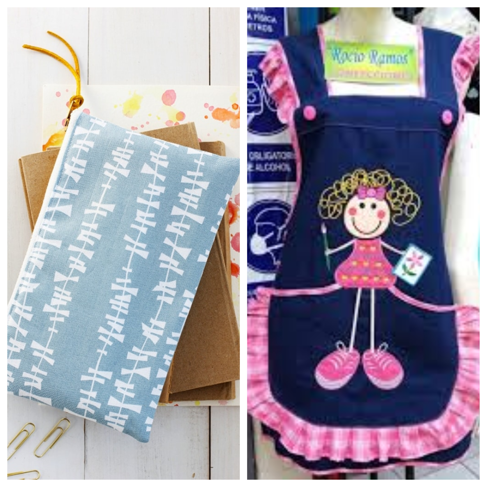
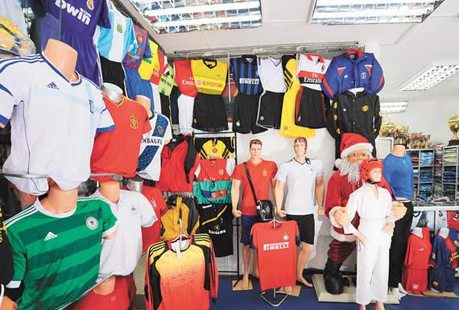
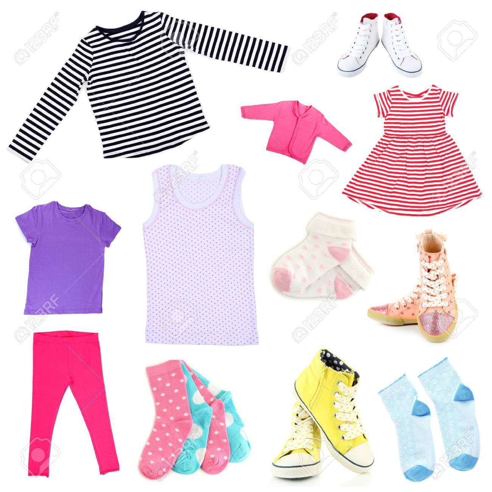

| OPERATIVIDAD DE MÁQUINAS DE CONFECCIÓN TEXTIL | CONFECCIÓN DE PRENDAS DEPORTIVAS |
CONFECCIÓN DE PRENDAS PARA NIÑAS |
CONFECCIÓN DE PRENDAS DE DAMAS |
|---|---|---|---|
| Confección de mandiles y cartucheras, utilizando eficientemente la máquina recta | Confección de prendas deportivas para niños, jóvenes y adultos. | Confección de prendas de vestir para niñas (jumper, vestidos, etc.) |
Confección de prendas de vestir para damas (polos de vestir, vestidos, prendas íntimas, etc.) |
|  |  |  |
|